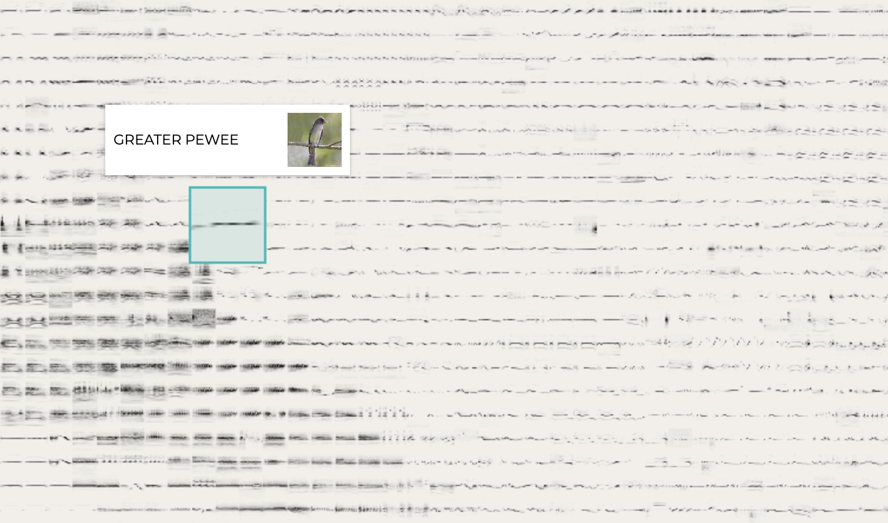
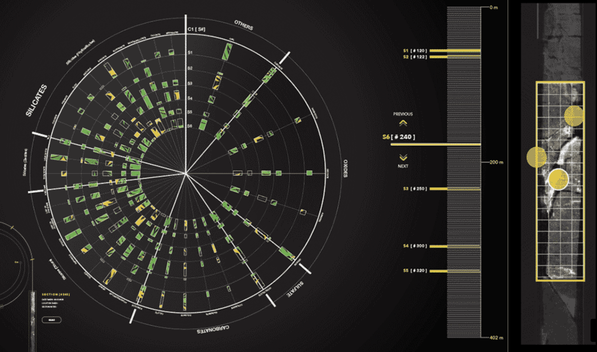
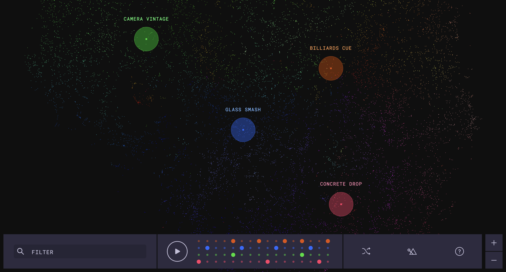

Inspiration

Bird Songs by Kyle McDonald. This project introduced me to the UMAP/T-SNE algorithm. I was intrigued by the apparent "boundary lines" within the bird song grid and wondered what caused them. Clicking or hovering over each bird triggers an audio clip of its song, which directly inspired the interactive animations in my project.

CoreInspector by Data to Discovery. I love the scale of this project. Though the sense of scale isn't directly reflected in my own project, I believe it is always an intriguing factor to consider in the field of data visualization.

The Infinite Drum Machine by Kyle McDonald. I am drawn to how the core of this project is not visualization, but rather uses visualization to support and enable a separate idea, in this case, an interactive drum machine. I really appreciated the degree of customization this project allows the user.
I also attended a bird sighting and data visualization workshop taught by Jer Thorp, who led me to explore avian datasets from the Cornell Lab of Ornithology and the Avian Diet Database directly.
Dataset and Visual Layout
The project features 759 birds from the Avian Diet Database, created by Dr. Allen Hurlbert, Professor of Biology at the University of North Carolina at Chapel Hill. The raw dataset is a compilation of 73,075 quantitative diet records from different studies for 759 bird species, primarily from North America. Each species has numerous rows that provide complexity to the top prey classes. The dataset also includes a number of variables like bird Region, Observation_Year, Prey_Phylum, Prey_Family, and Prey_Genus. Since this project is only concerned with bird diet, the main columns used for this project are:
- Common_Name: the common name of each bird species (e.g. Bald Eagle)
- Prey_Class: the class of preys that makes up a given species's diet (e.g. Aves, Teleostei)
- Fraction_Diet: a decimal value between 0 and 1 representing the proportion of the diet that a given class accounts for

One of the main challenges of this project was data engineering and developing the visual layout. Here, I explored dimension reduction algorithms and rasterization methods to cluster and place birds in a grid. The original dataset was engineered into a secondary dataset, shown in Figure 2, that includes only the species names and their diet fractions, divided among 63 prey classes (data/diet_vectors.csv). Each class has a decimal between 0 and 1, and together they add up to 1, representing 100% of a species's diet. Because plotting a 63-dimensional vector is impossible on a 2D plane, we use the UMAP algorithm to reduce each vector to two dimensions before plotting them onto a graph. The result shows how close each bird is to another based on what they eat.
The next step after clustering was to move these data points into a format that's easier to read and understand. The library I used for this is Rasterfairy. Rasterfairy takes the irregularly scattered 2D point cloud produced by UMAP and transforms it into a rectangular grid, assigning each bird to a unique cell while preserving the relative spatial relationships between points. The result is a clean, uniformly spaced grid layout where nearby cells represent birds with similar diets. This makes the overall composition far more readable than a raw scatter plot, and well-suited for displaying each bird's diet profile as a small visual unit within a larger mosaic.
Reflections and Future Endeavours
As my first formal data visualization project, this piece taught me a lot. Design, narrative, interaction, and message are all core components of data visualization that comes together to tell something unnoticed before. I felt like there were countless ways of how this project could have been, and countless ways of how it will go in the future if I continue to work on it. I was able to explore the data at hand, and then form a short story around it, yet I do realize that there are missed opportunities. Context plays a big part of data visualization, it almost certainly shapes what the central question is for a project. For instance, I could have gone deeper into the geography of diet: how the same species might eat differently across regions, or how climate and habitat shape what's available. The predator arrow feature hints at food web dynamics, but only scratches the surface of what a fuller ecological network might look like. These feel less like failures and more like open doors.
What I take away most is that data visualization is an act of translation. The Avian Diet Database existed long before this project, and visualization gave this data a form that could be felt, not just read. If this project makes someone pause and wonder what the bird outside their window had for breakfast, it has done what I hoped it would.